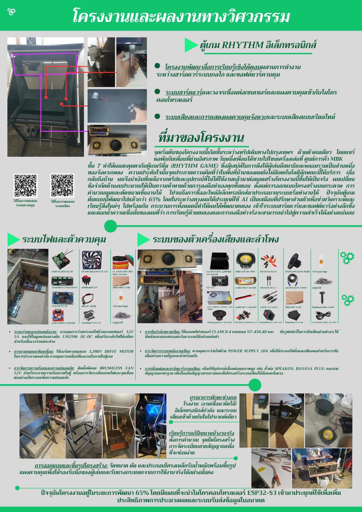
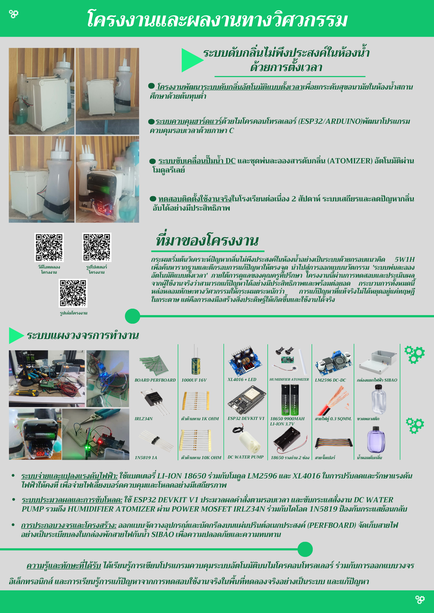

📌 ที่มาและความสำคัญของโครงงาน
- จุดเริ่มต้นและแรงบันดาลใจ: เล่าสตอรี่ว่าเราไปเจอสถานการณ์ ปัญหา หรือไอเดียนี้มาจากไหน (เช่น ไปเที่ยว, พบปัญหาในโรงเรียน หรือต่อยอดจากกิจกรรมสภานักเรียน)
- การวิเคราะห์ปัญหา: แสดงให้กรรมการเห็นกระบวนการคิดวิเคราะห์อย่างเป็นระบบ ว่าทำไมปัญหาข้อนี้ถึงสำคัญและควรได้รับการแก้ไข
โครงสร้างการนำเสนอโปรเจกต์ (5W1H & CAMPHUB)
- WHAT (เราทำอะไร): เขียนให้ชัดเจนว่าเป็นโครงงานอะไร ใครทำ พร้อมรูปถ่ายตอนลงมือทำจริง
- WHERE & WHEN (ที่ไหนและเมื่อไหร่): ระบุสถานที่และช่วงเวลา พร้อมภาพประกอบกับสถานที่หรือเกียรติบัตร
- HOW (ทำไมถึงเลือกทำ): เหตุผลและความตั้งใจในการเก็บเกี่ยวประสบการณ์
- WHY (ทำแล้วได้อะไร): ผลลัพธ์ที่ช่วยแก้ปัญหาให้ตัวเราและสังคม พร้อมทักษะที่พัฒนาขึ้น
เทคนิคเพิ่มเติมให้โปรเจกต์ปัง
- ใช้ Flowchart หรือผังงาน: แสดงกระบวนการคิดและระบบการทำงานด้วยผังงาน เพื่อให้กรรมการเห็นระบบวิศวกรรมที่ชัดเจน
- ระบุอุปกรณ์และโค้ด: แจกแจงฮาร์ดแวร์ (เช่น ESP32, เซนเซอร์) และภาษาโปรแกรมที่ใช้จริง
- 🎥 QR Code วิดีโอสาธิต: สำคัญมาก! ควรแนบคิวอาร์โค้ด (QR Code) สำหรับสแกนดูวิดีโอสาธิตการทำงานจริงของโปรเจกต์ เพื่อให้กรรมการเห็นภาพการใช้งานแบบ Real-time
💡 เคล็ดลับเพิ่มเติม (Pro Tip)
กรรมการไม่ได้มองหาผลงานที่สมบูรณ์แบบที่สุด แต่มองหา "กระบวนการคิดและการแก้ปัญหา" (Problem-Solving Process) เวลาเจออุปสรรค อย่าลืมเล่าวิธีแก้ปัญหาด้วยครับ!
